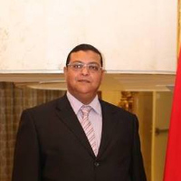

About me
Home About

Ayman Fathy Abdulrahman
Director Surveying manager at RME
- I am currently Corporate Surveying Manager with a rich background in the construction and engineering industry, dedicated to fostering excellence and innovation. My journey has been marked by a continuous pursuit of challenges and a relentless passion for improvement.
- As the Corporate Surveying Manager at Rowad Modern Engineering (Construction) since October 2015, I have been responsible for overseeing all surveying engineers, ensuring their seamless coordination across company projects. My role involves spearheading staff selection, promoting equal employment opportunities, and managing promotions. Additionally, I coordinate activities, set priorities, and direct subordinate employees, ensuring proper labor relations. I am also actively involved in preparing reports and effectively communicating survey results to other departments.
- During my tenure as Surveying Manager at Orascom Construction Industries Algeria from April 2014 to July 2015, I successfully led nine surveying teams in the accomplishment of underground infrastructure and construction works for the Algiers Refinery Rehabilitation and Adaptation project. Subsequently, in my role as Surveying Manager and Fit-Out Manager at Orascom Construction Industries Egypt from September 2012 to April 2014, I took charge of surveying and finishing teams, overseeing the construction of KSA Annex Zamalek. This turnkey project involved intricate tasks such as managing reinforced piles and ensuring the completion of multiple floors, showcasing my expertise in surveying and project management.
- Throughout my career, I have achieved significant milestones by successfully managing the construction of various high-profile projects, showcasing my expertise in surveying, staff management, and effective project coordination. My ability to navigate and address complex construction challenges has been instrumental in ensuring that each project adheres to the highest specifications and standards, underscoring my commitment to delivering excellence in every aspect of my professional endeavors.
- I earned my degree in Civil, Surveying Engineering from the Faculty of Engineering in Shoubra, Cairo, Egypt, completing my studies from 1989 to 1994. In addition to my academic background, I have enriched my skill set through various certifications and courses, including the General Health & Safety Awareness Course for Site Managers & Supervisors from Mesafe Limited in September 2003, OSHA General Industry (30-Hours), and OSHA Construction Industry (30-Hour). Complementing my technical expertise, I have successfully completed English Business Courses at the British Council up to an Advanced Level. Notably, my language proficiency extends to being a native Arabic speaker and interpreting English with expertise. Moreover, I possess an intermediate proficiency in French, further enhancing my ability to engage with a diverse spectrum of stakeholders in the field.
- With a career spanning since 1995, I have consistently showcased strong leadership and technical expertise in diverse and challenging projects.